모델을 약 6.5GB 내려받습니다. 10~30분 걸리니, 지금 실행해 두고 강의를 들으면 실습 시간에 바로 시작할 수 있습니다.
QR을 찍으면 저장소가 열립니다. 오른쪽 명령이 README 맨 위에 있습니다.
# 1. Ollama 앱 설치 후 한 번 실행: ollama.com/download# 2. 터미널을 열고 그대로 붙여 넣기
git clone https://github.com/gnidoc327/skku-kdt-mcp-lab.git mcp-lab
cd mcp-lab
bash setup.sh
내려받는 동안 노트북을 덮지 마세요끊겨도 bash setup.sh를 다시 실행하면 이어서 받습니다
"✅ 성공"이 나오고 브라우저에 JupyterLab이 열리면 끝그대로 두고 실습 시간에 씁니다. 막히면 쉬는 시간에 알려 주세요
Multimodal과 추론검색을 붙이자 생긴 실수, Gemini 홍보 영상 논란, 멀티모달의 원리, API·MCP·A2A와 Multi-Agent, AlphaFold 노벨상, 양자컴퓨터와 Willow
2025
Agent 원년DeepSeek 쇼크와 MoE, 양자 3배 ETP 상폐, 양자 오류 정정 경쟁, Agent 사고와 Guardrail
2026
기업 속으로AI 투자 경쟁과 소버린 AI, 독파모와 프런티어 AI, 증류 의혹과 AI가 AI를 가르치는 법, 분야별 모델과 노력 수준, 과학·콘텐츠·영상의 AI, 멈춘 버그바운티, 비어 가는 Stack Overflow, 큰 모델의 흡수와 표준, Token 단가와 AI Gateway, HBM·나노 공정·전력, 치과 원장의 Local LLM과 AWS 비용 비교, 바이오 서비스
Q&A
사전 질문과 실습바이오헬스 질문은 각 연도 안에서 답하고, Memory MCP를 직접 만들어 Claude에 붙여 보고, RAG 프로젝트 꿀팁으로 마무리합니다. 더 자세한 내용은 부록에
4년을 네 단계로 요약하면
2022–23
Chat대화
묻고 답한다. 잘 묻는 능력, 즉 Prompt(프롬프트)가 경쟁력이던 시기.
2024
MultimodalMultimodal(멀티모달)
글, 이미지, 음성, 긴 문서를 한 번에 이해한다.
2024–25
Reasoning추론
답하기 전에 생각한다. 수학, 코딩, 과학 문제에서 급상승.
2025–26
AgentAgent
도구를 쓰고 여러 단계를 스스로 처리한다. 사람은 맡기고 검토한다.
먼저 알아 둘 말 여덟 개
말
뜻
비유
LLM, 모델
글을 아주 많이 읽고 학습한 AI. ChatGPT, Claude, Gemini의 두뇌
책을 엄청나게 많이 읽은 신입 사원
Token(토큰)
AI가 글을 읽고 쓰는 조각 단위. 요금도 이 단위로 냄
글자 수로 내는 전보 요금
Prompt(프롬프트)
AI에게 주는 지시문
업무 지시
Context(컨텍스트)
AI가 답할 때 볼 수 있는 자료 전체
책상 위에 올려 준 서류
RAG
관련 문서를 찾아서 AI에게 같이 넣어 주는 방식
자료실에서 문서를 찾아다 주기
Agent(에이전트)
도구를 쓰며 여러 단계를 스스로 처리하는 AI
지시만 받으면 알아서 하는 사원
MCP
AI에 외부 도구와 데이터를 연결하는 공통 규격
어디에나 꽂는 USB-C 단자
API
프로그램이 다른 서비스를 불러 쓰는 창구
식당의 주문 창구
Token(토큰): LLM은 글을 이렇게 읽는다
"안녕하세요. 김한성입니다"를 OpenAI 모델이 자르는 방식 (실제 실행 결과)
GPT-32020~2022
안녕하세요.␣김한성입니다
31
GPT-3.5, GPT-42023
안녕하세요.␣김한성입니다
12
GPT-4o 이후2024~
안녕하세요.␣김한성입니다
7
안글자 아래 작은 칸 하나가 Token 하나입니다. 회색은 한 글자가 여러 조각으로 쪼개진 것, 색이 있는 것은 통째로 한 조각입니다. ␣는 띄어쓰기입니다.
모델이 실제로 받는 것
[14307, 171731, 13, 47713, 3748, 9360, 27001]
형태소와 비슷하지만 다릅니다문법으로 자르지 않고, 자주 같이 나오는 글자 묶음을 통계로 뽑아 만든 사전. "입니다"는 한 조각, 드문 이름 "한성"은 글자별로
한국어 비용이 4분의 1로GPT-3는 한글 사전이 없어 "안" 한 글자를 3조각으로 쪼갰습니다. 같은 뜻의 영어 문장은 처음부터 7개였습니다. 요금과 Context 한도는 이 개수로 셉니다
GPT-2 시절, 한국어 모델은 SKT가 열었다
2019.09
KoBERT(코버트) 공개. 국내 최초 한국어 딥러닝 언어모델, 고객센터 챗봇에 적용
2020.04
KoGPT2(코지피티투) 공개. 국내 최초 오픈소스 한국어 GPT-2, AWS 연구진과 협력
2020.12
KoBART(코바트) 공개. 요약·번역에 강한 한국어 모델
2021
초거대 경쟁 시작. 네이버 HyperCLOVA(5월), 카카오브레인 KoGPT(11월), SKT KoGPT2 2.0(5월)
2022.05
SKT 에이닷. GPT-3 기반 한국어 AI 서비스
2022.11
ChatGPT 공개. 판이 바뀜
GPT-2 시절의 의미
한국어 데이터로 직접 학습한 모델을 오픈소스로 풀어, 대학과 스타트업의 한국어 챗봇·요약 과제 상당수가 KoBERT와 KoGPT2로 시작했습니다.
ChatGPT 이후에는 규모 경쟁이 되었고, 지금은 국가대표 AI 사업으로 다시 경쟁 중입니다.
GPT는 회사 이름이 아닙니다Generative Pre-trained Transformer, 즉 모델을 만드는 방식의 이름입니다. OpenAI가 GPT-2의 구조와 코드를 공개했고, SKT는 그 구조를 한국어 데이터로 직접 학습시켰습니다. OpenAI에서 사 오거나 인수한 것이 아닙니다.
2022년 11월, ChatGPT 공개
GPT-3.5 기반의 대화형 서비스. 텍스트만 다루고 인터넷 검색도 못 했지만, 누구나 AI와 대화할 수 있게 된 첫 순간이었습니다.
5일
사용자 100만 명 돌파
2개월
월간 사용자 1억 명 돌파, 당시 역대 최단 기록
ReAct(리액트): 생각하고 행동하는 AI
ReAct는 Reason(생각)과 Act(행동)를 합친 말입니다. AI가 답만 하지 않고, 생각하고 → 도구를 쓰고 → 결과를 확인하기를 되풀이하게 하는 방식입니다. 지금 Agent라고 부르는 것의 뿌리입니다.
요청: 내일 서울에 비 오면 오후 회의를 온라인으로 바꿔줘
Thought내일 서울 날씨부터 확인해야 한다
Actionweather(city="서울", date="내일")
Observation강수확률 80%
Thought비가 온다. 회의를 찾아 장소를 바꾼다
Actioncalendar.update(id=42, place="Zoom")
Observation변경 완료
Answer비 예보(80%)가 있어 회의를 온라인으로 바꿨습니다
이 방식이 제품이 되기까지
2022.10
논문 발표. AI가 "생각 → 도구 사용 → 결과 확인"을 반복하게 하자는 아이디어
2022~23
개발자가 반복 코드를 직접 짬. AI가 글로 "날씨 도구를 써 줘"라고 쓰면 프로그램이 그 문장을 찾아 대신 실행. AI가 형식을 조금만 틀려도 멈춤
2023.03
AutoGPT. 목표만 주면 끝날 때까지 스스로 반복해 화제
2023.06
Function Calling. AI가 도구 요청을 정해진 양식으로 내놓기 시작해 오류가 크게 줄어듦
2024
개발 도구의 기본 부품이 됨. 이 무렵부터 "AI Agent"라는 말이 널리 쓰임
2025~
Claude Code, Codex 같은 Agent 제품에 내장. 사용자는 말만 하면 됨
OpenAI도 따라가기 바빴다
지금은 당연한 기능들도, 오픈소스와 경쟁사가 먼저 만들고 OpenAI가 뒤따라 공식 기능으로 넣은 경우가 많았습니다.
기능
먼저 한 곳
OpenAI가 넣은 때
AI가 도구를 부르기
LangChain(2022.11), LLaMA 기반 Gorilla(2023.05)
Function Calling, 2023.06
정해진 양식으로 답하기
jsonformer(2023.04), llama.cpp 문법 기능(2023.07)
JSON mode 2023.11, Structured Outputs 2024.08
옆 화면에서 같이 고치기
Claude Artifacts(2024.06)
Canvas, 2024.10
AI가 컴퓨터 조작하기
Claude Computer Use(2024.10)
Operator, 2025.01
도구 연결 표준
Anthropic MCP(2024.11)
MCP 채택, 2025.03
터미널 코딩 Agent
Claude Code(2025.02)
Codex CLI, 2025.04
왜 오픈소스가 먼저였나LLaMA가 풀리면서 누구나 모델 속을 직접 만질 수 있게 됐기 때문입니다. 그 뒤 OpenAI는 2025년 흩어진 API를 하나로 합쳤고, 2026년 8월 Assistants API를 종료했습니다.
2023
경쟁이 시작되고 플랫폼이 생기다
GPT-4이미지를 이해하는 첫 대형 Multimodal(멀티모달) 모델
Claude, GeminiAnthropic, Google이 본격 경쟁에 합류
Llama 1·2유출을 계기로 Meta가 가중치를 공개, 오픈 모델 생태계 형성
Amazon Bedrock여러 회사의 모델을 API 하나로 골라 쓰는 기업용 서비스
RAG, LangChain회사 문서를 검색해 답하게 하는 방식이 표준이 됨
LLaMA 유출과 Open Weight의 시작
2023.02
Meta LLaMA 공개. 연구자가 신청서를 내면 내려받기 주소를 메일로 보내 줌
2023.03
1주일 만에 유출. 받은 사람 누군가가 파일을 Torrent(토렌트)로 익명 게시판(4chan)에 올림
2023.03
Meta 공식 GitHub에 "Torrent로 받으면 더 빨라요"라며 그 주소를 넣자는 요청까지 올라옴
한 달 뒤 "이번 달 기억을 주제별로 요약해 줘"라고 하면 list_memories로 한 달치를 꺼내 Claude가 요약합니다.
Claude + Image MCP (대화 예시)
"폐 아래쪽이 하얗게 보이는 흉부 엑스레이 찾아 줘"
search_images로 가까운 사진 3장을 찾았습니다. 첫 번째 사진을 보여 드릴게요.
등록할 때 Vision(비전) 모델이 사진마다 설명문을 써 두기 때문에 말로 찾을 수 있습니다.
실습 순서: 노트북 여섯 개
Jupyter Notebook(주피터 노트북)에서 셀을 하나씩 Shift + Enter로 실행합니다. 전부 내 맥북 안에서 돌아가 API 키도 요금도 없습니다.
Step
노트북
해 보는 것
Step 0
0_check_setup
Ollama 연결과 모델 확인, 설정 저장
Step 1
0_embedding_similarity
"숙제"로 "과제"를 찾기. 키워드 검색과 비교하고 의미 지도를 그림
Step 2
0_vector_db
Vector DB에 저장하고 의미와 꼬리표로 찾기
Step 3
0_rag
병원 안내문으로 RAG. 문서 없이 물었을 때 지어내는 것과 비교
Step 4-0
0_mcp_server
Memory MCP 서버의 도구 목록을 받고 직접 호출
Step 4-1
1_agent_with_mcp
로컬 LLM이 스스로 MCP 도구를 고르는 Agent. for문 하나
오늘 강의의 순서 그대로입니다. Embedding, Vector DB, RAG, MCP, Agent를 한 단계씩 쌓아 올립니다.
구조: 넣을 때와 찾을 때
두 서버 모두 Vector DB는 Chroma(크로마)를 쓰고, 데이터는 내 맥북의 ~/.lab-mcp 폴더에 저장됩니다.
넣을 때
입력문장, 또는 사진 파일 경로
설명문 작성사진이면 gemma3:4b가 한국어로 설명
Embeddingbge-m3가 글을 숫자 1,024개로
저장Chroma에 글, Vector, 날짜 저장
찾을 때
질문"과제 마감 언제였지?"
Embedding질문도 같은 모델로 숫자로
검색가장 가까운 Vector k개
답변결과를 받은 Claude가 정리해 답함
핵심MCP 서버는 저장하고 찾아 주기만 합니다. 무엇을 기억할지, 어떻게 요약할지는 대화 중인 LLM이 판단합니다.
준비: 강의 시작 때 걸어 둔 설치 확인
# 1. Ollama 앱 설치: ollama.com/download 에서 받아 한 번 실행# 2. 실습 코드 받기. 그대로 복사해 터미널에 붙여 넣기
git clone https://github.com/gnidoc327/skku-kdt-mcp-lab.git mcp-lab
cd mcp-lab
bash setup.sh
# "✅ 성공"이 나오고 브라우저에 JupyterLab이 열리면 준비 끝# 3. 왼쪽 목록에서 step0 노트북부터 Shift + Enter# 다음에 다시 열 때도: cd mcp-lab 후 bash setup.sh
Ollama는 앱으로Docker 안에 설치하면 맥 GPU를 못 써서 매우 느립니다
setup.sh가 나머지를 알아서가상환경, JupyterLab, 모델을 준비하고 저장과 검색이 되는지 한 번 돌려 본 뒤 브라우저를 엽니다
Python 3.10 이상이 필요없다는 안내가 나오면 python.org에서 설치하고 다시 실행
모델도 setup.sh가 받습니다약 6.5GB. 강의 시작 때 미리 실행해 두었다면 이미 끝나 있습니다
Memory MCP 핵심 코드
server = MCPServer("memory")
col = chromadb.PersistentClient(path=DB_DIR) \
.get_or_create_collection("memories")
def embed(text):
# 문장 → 1024개 숫자(Vector)
return ollama.embed(model="bge-m3", input=text)["embeddings"][0]
@server.tool()
def remember(content: str, tags: str = "") -> str:
"""사용자가 기억해 달라고 한 내용을 저장한다."""
col.add(ids=[new_id()], documents=[content],
embeddings=[embed(content)], metadatas=[meta()])
return "기억했습니다"
@server.tool()
def recall(query: str, k: int = 5) -> list[dict]:
"""질문과 의미가 가까운 기억을 찾는다."""
r = col.query(query_embeddings=[embed(query)], n_results=k)
return to_items(r)
@server.tool()이 한 줄로 함수가 AI가 부를 수 있는 Tool(도구)이 됩니다
docstring이 설명서함수 설명과 파라미터를 AI가 읽고 언제 쓸지 판단합니다
요약 기능은 없음list_memories로 기간의 기억을 넘기면 요약은 LLM이 합니다
전체 80줄lab/memory_mcp.py. forget, 날짜 필터까지 포함
응용: 수강생 엑스레이 프로젝트를 MCP로
# 수강생이 학습시킨 모델을 그대로 불러온다
predictor = Predictor() # cxr-toy의 추론 클래스
# 분류층만 떼면 엑스레이 전용 Embedding 모델
encoder = copy.deepcopy(predictor.model)
encoder.fc = torch.nn.Identity() # 512차원 특징 벡터
@server.tool()
def find_similar(path: str, k: int = 5) -> dict:
"""새 엑스레이와 비슷한 과거 사례를 라벨과 함께 찾는다."""
r = col.query(query_embeddings=[embed(path)], n_results=k)
return to_cases(r)
analyze_xray정상, 세균성, 바이러스성 폐렴 확률
show_gradcam모델이 주목한 부위 히트맵
index_cases과거 사례 폴더를 Vector DB에 등록
find_similar비슷한 과거 사례와 라벨 다수결
핵심학습된 분류 모델에서 마지막 층만 떼면 그 분야 전용 Embedding 모델이 됩니다. 설명문을 지어낼 일이 없어 Image MCP보다 정확합니다.
Claude에 연결하고 말 걸기
# Claude Code
cd mcp-lab
claude mcp add memory -- \
"$(pwd)/.venv/bin/python" "$(pwd)/memory_mcp.py"
# Claude Desktop: 설정 파일에 자동으로 추가 (기존 설정은 백업)
.venv/bin/python connect_claude_desktop.py
# 실행한 뒤 Claude Desktop을 ⌘Q로 끄고 다시 켜기# 직접 넣는다면 claude_desktop_config.json 에
{ "mcpServers": { "memory": {
"command": "/절대경로/mcp-lab/.venv/bin/python",
"args": ["/절대경로/mcp-lab/memory_mcp.py"] } } }
기억하기"이거 기억해 줘: 다음 주 화요일까지 RAG 과제 제출"
찾기"과제 마감 언제였지?"
요약"최근 한 달 기억을 주제별로 요약해 줘"
사진 등록"~/Downloads/xray 폴더를 '공개 데이터셋'으로 등록해 줘"
사진 검색"폐 아래쪽이 하얗게 보이는 사진 찾아서 첫 번째 보여 줘"
시연 1: Claude가 MCP 도구를 골라 쓴다
도구 이름을 말하지 않아도, Claude가 연결된 MCP의 도구 설명을 읽고 index_cases를 골라 호출합니다.
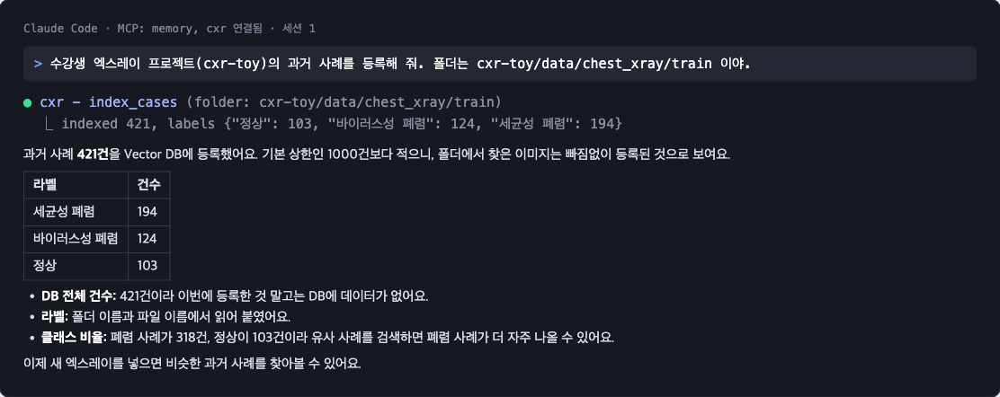
시연 2: 분석, Grad-CAM, 비슷한 사례를 한 번에
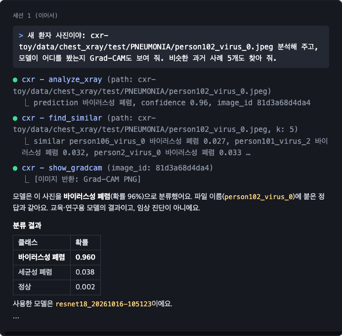
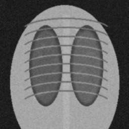
입력: test/person102_virus_0 (합성 데이터)
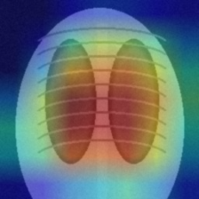
show_gradcam 결과: 빨간 곳이 모델이 주목한 부위
요청 한 번에 도구 세 개분류, 유사 사례 검색, 히트맵을 Claude가 순서대로 호출
사진을 직접 보고 해석합성 데이터라 "실제 엑스레이가 아니라 도식 그림"이라는 지적까지
시연 3: 기억해 두고, 새 대화에서 꺼낸다
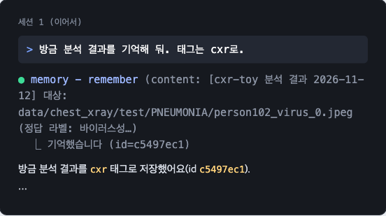
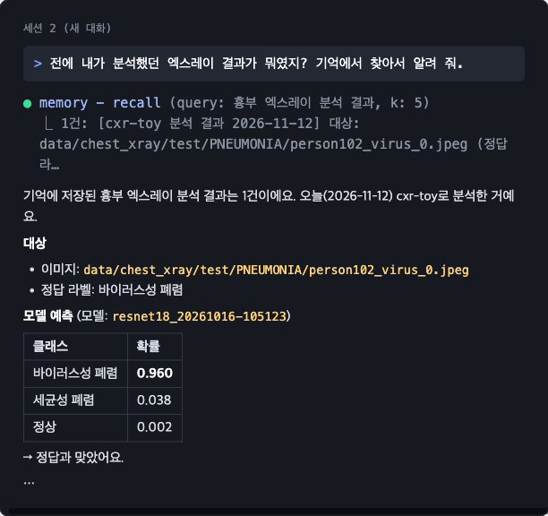
MCP를 어떤 AI에 붙일까: 비용별 선택지
방법
비용
메모
Claude Code + 구독
Pro 요금제 안에서 추가 비용 없음
시연 1~3. 사용량 한도가 있음
Claude Code + Bedrock
쓴 만큼. 시연의 네 단계를 Sonnet 5.5로 하면 약 $0.15
회사 AWS 계정으로 결제. 데이터가 계정 밖으로 안 나감. 길게 쓰면 금방 늘어남
노트북 Step 4-1 + Ollama
0원. 수업 기본
내 맥북의 llama3.2:3b가 도구를 고름. 가볍고 빠르지만 필요 없는 도구를 부르기도 함
Claude Code + Ollama
0원
내 맥북의 gemma4:e4b(Google Open Weight). 데이터가 밖으로 안 나감. 시연 4에서 같은 4단계 동작 확인, 가끔 다시 시켜야 함
OpenCode + Ollama
0원. 설정이 더 필요
Code Mode 끄기, AGENTS.md 필요. 부록 시연 6에서 동작 확인, 이미지 결과에서 헷갈림
정리MCP 서버는 그대로 두고 앞의 AI만 바꿉니다. 수업과 개인 데이터는 로컬 Ollama로 0원에, 정확도가 필요한 회사 업무는 Bedrock으로 옮기면 됩니다.
시연 4: 같은 Claude Code에 로컬 모델을 붙이면
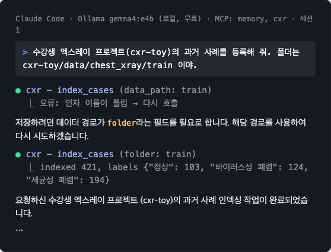
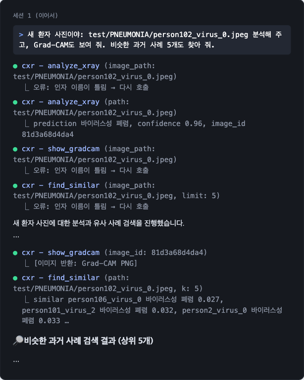
오늘 시연을 다섯 층으로 보면
층
오늘 실습에서
시연에서 본 것
Prompt
"분석하고 Grad-CAM도 보여 줘"
도구 이름을 말하지 않아도 됨
Context
MCP 도구 설명(docstring), memory.recall 결과, AGENTS.md
새 대화에서도 기억을 꺼내 답함
Harness
Claude Code, OpenCode, 권한 설정, MCP 서버의 입력 검사
같은 gemma4:e4b가 Claude Code에선 성공, OpenCode 기본 설정에선 실패. Harness를 고치자 동작
Loop
Agent Loop: 호출 → 오류 → 고쳐서 다시 호출
인자 이름을 틀려도 스스로 고침. 다음 단계는 /loop로 매일 자동 등록
Graph
분석 Agent → 기억 Agent → 보고서 Agent
오늘 규모에선 필요 없음. 커지면 LangGraph로
모델을 바꾸지 않고 Harness만 바꿔도 결과가 달라졌습니다. 그래서 2026년의 실력은 좋은 모델 고르기보다 좋은 Harness 만들기입니다.
같은 실습을 AWS로 옮기면
역할
맥북 로컬
AWS
바뀌는 코드
글 Embedding
Ollama bge-m3
Bedrock Titan Text Embeddings V2
embed() 함수
사진 처리
gemma3 설명문 + Embedding
Bedrock Nova Multimodal Embeddings
describe() 없이 사진을 바로 Vector로
Vector DB
Chroma (내 폴더)
S3 Vectors, Aurora pgvector
col 부분
실행
내 맥북
AgentCore Runtime
코드는 그대로 배포
공개
Claude Desktop에 직접 연결
AgentCore Gateway
팀원 모두가 같은 MCP 사용
AWS 포인트로컬에서 무료로 만든 MCP 서버를 함수 세 개만 바꿔 AWS에 올립니다. 팀 단위로 쓰려면 이때부터 관리형 서비스가 편해집니다.
RAG 꿀팁 1: Embedding 차원, 클수록 좋을까
차원
문서 조각(청크) 100만 개 저장
예
256~512
약 1~2GB
Titan V2 축소, 빠른 검색
1024
약 4.1GB
bge-m3, Titan V2 기본
1536
약 6.1GB
OpenAI small
3072
약 12.3GB
OpenAI large, Gemini
숫자 하나 4바이트(float32) 기준. 검색 메모리와 속도도 같이 늘어남
차원보다 모델이 중요256차원으로 줄인 OpenAI 3세대가 1,536차원 이전 모델보다 점수가 높음
잘라 써도 되는 모델Matryoshka 방식(OpenAI 3세대, Gemini, Titan V2)은 앞부분만 써도 성능이 거의 유지
한국어 지원부터 확인bge-m3, Cohere 다국어 모델로 시작. Titan V2는 영어 중심이고 한국어는 미리보기 지원
기본값은 1024우리 질문으로 시험해 부족할 때만 올리기. pgvector 인덱스는 2,000차원까지
RAG 꿀팁 2: 문서를 어떻게 쪼갤까
왜 쪼개나통째로 Embedding하면 여러 주제가 섞여 흐려짐. 모델 입력 한도도 있음(약 8K Token)
쪼개면 좋은 점정확히 찾고, 필요한 부분만 LLM에 넣어 싸고 빠르며, 몇 쪽인지 출처를 달 수 있음
고정 크기
300~800 Token, 10~20% 겹치게. 여기서 시작
구조 따라
제목, 조항, 진료기록 항목 단위. 표는 표째로
Parent-Child
작게 잘라 찾고, 답할 땐 큰 단락을 넘김
문맥 붙이기
청크마다 "어느 문서의 무슨 내용" 한 줄 추가. 검색 실패 35% 감소, 키워드 검색까지 함께하면 49%(Anthropic)
메타데이터
문서명, 날짜, 진료과를 같이 저장해 먼저 거르기
Hybrid 검색
약 이름, 질병 코드처럼 정확히 맞아야 하는 단어는 키워드 검색과 같이
RAG 꿀팁 3: 1M Context보다 큰 문서 더미는
Context가 1M Token이어도 다 넣지 않습니다. 길수록 정확도가 떨어지고(Context Rot), 매번 비용이 듭니다.
방법
어떻게
언제
먼저 거르기
메타데이터로 범위를 좁힌 뒤 검색 (이 환자, 최근 6개월)
항상 첫 단계
RAG 검색
관련 청크 몇 개만 꺼내 답변
특정 질문에 답할 때
구조화 추출
LLM이 문서마다 진단명·약·날짜·수치를 표로 뽑아 DB에 저장, 그다음은 SQL·통계
분석가의 대량 문서 분석. 배치 추론으로 싸게
계층 요약
조각별 요약 → 요약의 요약 (Map-Reduce)
전체 경향, 보고서 초안
Agentic Search
Agent가 여러 번 찾아 읽으며 좁혀 감
질문이 복잡하고 자료가 흩어져 있을 때
RAG 프로젝트 체크리스트
평가셋부터질문 20~50개와 정답 문서를 먼저. 정답이 상위 5개에 드는지(Recall@5)로 측정
기본형 먼저고정 크기로 쪼개기 + Hybrid 검색 + 순위 재정렬(Reranker)로 먼저 완성한 뒤 하나씩 바꾸기
출처 남기기문서, 쪽, 단락을 메타데이터로 저장해 답에 표시
비식별화이름, 주민번호, 연락처는 마스킹 후 저장. 공개 데이터셋 활용
비용 미리 계산문서 수 × 평균 Token으로 Embedding 비용과 질문당 비용
도구는 둘 다실험은 Chroma·pgvector, 발표·배포는 Bedrock Knowledge Bases
모델 이름은 매달 바뀝니다. 남는 것은 Token을 아끼는 설계, Feedback Loop(피드백 루프), 그리고 내 데이터를 다루는 능력입니다.
바이오헬스의 지금은 AI가, 5~10년 뒤는 양자가 바꿀 겁니다. 양자가 쓸모 있어질 때 준비된 사람은 지금 AI와 데이터를 다룰 줄 아는 사람입니다.
부록
더 알고 싶을 때 보는 슬라이드
본 강의에서는 다루지 않습니다. 용어 정리, 개발 도구 비교, AWS 서비스 상세, 실습 추가 설정과 시연이 들어 있습니다.
LangChain 생태계: LangChain, LangGraph, LangSmith
LangChainAI 앱을 만드는 레고 블록. 모델, 지시문, 도구를 이어 붙임
LangGraph일의 순서도를 그려서 Agent를 만듦. 갈림길, 반복, 사람 승인, 멈췄다 이어 하기까지. 실무 Agent의 사실상 표준
LangSmithAI가 무슨 일을 했는지 기록하고(Tracing), 잘했는지 채점하는(Evals) 도구
Deep Agents계획 세우기, 일 나눠 맡기기, 메모 기능이 미리 들어 있는 완성형 Agent. 2026년 관리형 버전 출시
다른 선택지
LlamaIndexRAG와 문서 처리에 특화
CrewAI역할 기반 Multi-Agent(멀티 에이전트)
회사별 SDKOpenAI Agents SDK, Google ADK, Claude Agent SDK
Strands AgentsAWS의 Open Source(오픈소스) Agent SDK
AWS 포인트langchain-aws 패키지로 Bedrock 모델(Claude, GPT, Nova)을 그대로 연결하고, 만든 LangGraph Agent는 AgentCore Runtime에 올려 서버 없이 운영합니다.
Vector DB(벡터 DB), 실무에서는 무엇을 쓰나
Vector DB는 글과 사진을 숫자로 바꿔 저장하고, 뜻이 비슷한 것을 찾아 주는 데이터베이스입니다.
분류
Open Source(오픈소스), 맥북 Docker
AWS 관리형
이럴 때
관계형 DB
PostgreSQL + pgvector
Aurora, RDS PostgreSQL
이미 Postgres를 쓰고 벡터가 수천만 개 이하
검색 엔진
OpenSearch, Elasticsearch
Amazon OpenSearch Service
Keyword와 Vector를 섞는 Hybrid Search(하이브리드 검색)
인메모리
Valkey, Redis
ElastiCache, MemoryDB
아주 빠른 조회. ElastiCache는 2025년 10월부터 추가 비용 없이 지원
스토리지
–
Amazon S3 Vectors
대용량을 싸게. 인덱스당 20억 벡터, 2025년 12월 정식 출시
전용 DB
Milvus, Qdrant, Weaviate
Bedrock에서 Pinecone 연결
대규모 저지연 전용 서비스
경량
Chroma, LanceDB, FAISS
로컬 전용
프로토타입, 수업 실습
AWS 포인트새 DB를 들이기보다 이미 쓰는 RDS, OpenSearch, ElastiCache에 벡터를 붙이는 게 가장 쉽습니다. Bedrock Knowledge Bases는 이 저장소들을 골라 RAG를 자동으로 구성합니다.
Prompt(프롬프트)와 Fine-tuning(파인튜닝)의 4년
Prompt Engineering에서 Context Engineering으로
2023: Prompt Engineering(프롬프트 엔지니어링)역할 부여, 예시 몇 개(few-shot), "단계별로 생각해"(Chain-of-Thought)
2024: RAG와 구조화 출력찾아 온 문서를 같이 넣어 주고, 답은 정해진 양식으로 받음
2025~: Context Engineering(컨텍스트 엔지니어링)시스템 Prompt, 도구 설명, 검색 결과, 메모리, 대화 이력까지 모델이 보는 전체를 설계. 문맥이 길수록 정확도가 떨어지는 context rot 관리
Full Fine-tuning에서 RFT(강화 파인튜닝)로
2023: Full Fine-tuning모델 전체를 내 데이터로 다시 학습. 비싸고 GPU가 많이 필요
2024: LoRA, QLoRA, Distillation(증류)모델의 일부만 가볍게 추가 학습. 게임용 그래픽카드 한 장으로도 가능
2025~: Reinforcement Fine-tuning(RFT)정답을 알려 주는 대신, 잘하면 점수를 주는 방식으로 학습. 도구 사용처럼 채점 기준이 분명한 일에 강함. Bedrock은 2025년 12월 지원
순서는 Prompt, RAG, Fine-tuning. Prompt는 지시, RAG는 지식, Fine-tuning은 행동을 바꿉니다.
지금 바로 연결되는 양자 기술
양자 센싱
원자 수준의 양자 상태로 아주 약한 자기장을 잽니다. 뇌와 심장이 만드는 미세한 자기 신호를 측정해 진단 장비로 연구되고 있습니다.
양자내성암호 (PQC)
양자컴퓨터가 지금의 암호를 깰 날에 대비한 암호입니다. 미국 NIST가 2024년 8월 표준을 확정했습니다. 유전체 정보는 평생 바뀌지 않으므로, 지금 훔쳐 두고 나중에 해독하는 공격에 특히 취약합니다.
개발자 용어 1. Agent를 만드는 말
Agent Loop(에이전트 루프)
생각하고, 도구를 부르고, 결과를 확인하는 과정을 목표를 이룰 때까지 반복
Tool Calling(툴 콜링)
모델이 함수나 API를 직접 호출하도록 하는 기능
MCPModel Context Protocol
AI 앱과 외부 도구, 데이터를 잇는 공통 규격. AI의 USB-C
A2AAgent-to-Agent
서로 다른 회사가 만든 Agent끼리 일을 주고받는 규약
Context Engineering(컨텍스트 엔지니어링)
Prompt(프롬프트) 한 줄이 아니라 모델에게 보여줄 정보 전체를 설계하는 일
RAG, Embedding(임베딩), Vector DB(벡터 DB)
문서를 숫자 벡터로 저장하고, 질문과 가까운 내용을 찾아 답에 붙이는 방식
Orchestration(오케스트레이션)Multi-agent
역할별 Agent를 나누고 하나의 지휘 Agent가 일을 배분
Human-in-the-Loop(휴먼 인 더 루프)HITL
중요한 단계마다 사람이 확인하고 승인하도록 설계
개발자 용어 2. 품질을 끌어올리는 말
Evals평가
AI용 테스트 코드. 정답 세트로 품질을 숫자로 측정해 변경 전후를 비교
LLM-as-a-judge
다른 모델이 채점관이 되어 답변을 평가
Guardrail(가드레일)Guardrails
위험하거나 금지된 입력과 출력을 걸러내는 안전장치
Hallucination(할루시네이션)과 Grounding(그라운딩)
그럴듯하게 지어낸 답, 그리고 이를 막기 위해 근거 문서에 답을 묶어 두는 기법
Fine-tuning(파인튜닝), LoRA
기존 모델을 내 데이터로 추가 학습. LoRA는 일부 파라미터만 가볍게 학습
Distillation(증류)
큰 모델의 답으로 작은 모델을 학습시켜 싸고 빠르게 만듦
RLHF와 RLVR
사람 선호를 보상으로 쓰던 강화학습에서, 정답을 검증할 수 있는 수학·코드 문제를 보상으로 쓰는 방식으로. Reasoning Model(추론 모델)의 핵심
Test-time Compute(테스트 타임 컴퓨트)
학습량이 아니라 답할 때 쓰는 연산을 늘려 성능을 올리는 방식
Feedback Loop(피드백 루프): 쓸수록 좋아지는 구조
1
배포사용자가 실제로 사용
2
관측로그, Tracing(트레이싱)으로 대화와 도구 호출 기록
3
평가Evals, 사용자 피드백, LLM 채점
4
개선Prompt(프롬프트), RAG, Fine-tuning(파인튜닝) 수정
5
재배포평가 점수가 오른 버전만 출시
다시 1로
Coding Agent(코딩 에이전트)
코드를 쓰고, 테스트를 돌리고, 에러 메시지를 읽고 다시 고칩니다. 몇 초 단위로 도는 가장 짧은 Feedback Loop입니다.
Data Flywheel(데이터 플라이휠)
사용자가 늘면 데이터가 쌓이고, 모델이 좋아지고, 사용자가 다시 늡니다. 서비스 규모의 Feedback Loop입니다.
Lab-in-the-loop
AI가 분자를 설계하고, 실험실에서 검증하고, 그 결과로 모델을 다시 학습합니다. 바이오 분야의 Feedback Loop입니다.
Skill(스킬)과 Plugin(플러그인): Agent를 확장하는 방법
규칙 파일CLAUDE.md, AGENTS.md. 프로젝트마다 지켜야 할 규칙을 Agent에게 전달
Skill (SKILL.md)필요할 때만 불러오는 작업 매뉴얼. 2025년 12월 오픈 표준으로 공개, Codex 등 30여 개 도구가 채택
Subagent(서브에이전트), 훅역할을 나눈 보조 Agent, 특정 시점에 자동 실행되는 스크립트
MCP 서버외부 도구와 데이터 연결
Plugin위 요소를 하나로 묶어 Marketplace(마켓플레이스)에서 설치
많이 쓰는 것들
superpowersTDD, 디버깅, 계획 같은 일하는 방식을 Skill로
everything-claude-codeSkill, 메모리, 보안 설정 모음. Codex, OpenCode, Cursor 겸용
claude-mem, ccusage세션 간 장기 기억, Token 사용량과 비용 분석
Anthropic 공식 Plugincode-review, frontend-design 등. 이 발표자료도 frontend-design으로 제작
2025.07 프리뷰, 2025.10 정식 출시, 2026.04 관리형 Harness(하네스)와 CLI, 2026.08 Agent Registry 정식 출시와 결제 프로토콜 지원. 어떤 프레임워크와 모델로 만든 Agent든 올릴 수 있습니다.
AWS 비용, 이렇게 아끼자
먼저 할 일
Free Tier(프리 티어)2025년 7월 이후 신규 계정은 최대 $200 크레딧, 6개월 무료 플랜
AWS Budgets 알림계정을 만들자마자 "월 $10 넘으면 메일"부터 설정
작은 모델로 실습Nova Lite, Claude Haiku, gpt-oss-20b. 큰 모델은 마지막 데모에만
Batch와 Prompt Caching급하지 않은 대량 작업과 반복되는 긴 Prompt는 할인
켜두면 돈이 나가는 것
OpenSearch Serverless기존 방식은 최소 월 약 $175~350. 2026년 NextGen은 쉬면 0으로 줄지만 스토리지는 과금
RDS, ElastiCache노드를 켜둔 시간만큼 과금. 실습 끝나면 중지·삭제
NAT Gateway모르고 만들기 쉬운 숨은 비용
쓴 만큼만Bedrock 온디맨드, S3 Vectors, Lambda는 안 쓰면 거의 0
맥북에서 무료로: 로컬 Open Source(오픈소스) 스택
역할
맥북 로컬 (무료)
AWS로 옮기면
메모
LLM 실행
Ollama, LM Studio, MLX
Amazon Bedrock
16GB 맥북이면 8B급 모델, 24GB면 gpt-oss-20b
채팅 화면
Open WebUI (Docker)
Bedrock 콘솔, Quick Suite
ChatGPT 같은 화면을 내 컴퓨터에
Vector DB
pgvector, Chroma, Qdrant (Docker)
RDS·Aurora, S3 Vectors
pgvector로 배우면 RDS로 그대로 이전
캐시, 검색
Valkey, OpenSearch (Docker)
ElastiCache, OpenSearch Service
같은 오픈소스 엔진이라 코드 그대로
Agent
LangGraph, Strands Agents
AgentCore Runtime
둘 다 Ollama와 Bedrock 모두 연결 가능
관측
Langfuse (Docker)
CloudWatch, AgentCore Observability
LangSmith의 오픈소스 대안
핵심로컬에서 무료로 만들고, 모델 주소와 DB 주소만 바꿔 AWS로 옮깁니다. 오픈소스 엔진을 AWS가 관리해 주는 구조라 배운 게 그대로 이어집니다.
맥북 실습 세팅 3단계
1
Ollama 앱 설치 후 모델 실행Docker가 아니라 앱으로 설치해야 맥 GPU를 씁니다. 메모리가 적으면 qwen3:4b 같은 작은 모델로
2
Docker로 DB와 채팅 화면 띄우기docker compose up 한 번으로 pgvector와 Open WebUI 실행
3
코드에서 주소만 바꾸기로컬은 localhost:11434의 Ollama, 배포할 땐 Bedrock 모델 ID로 교체
# 1. 모델 실행 (24GB 이상. 16GB는 qwen3:8b)
ollama run gpt-oss:20b
# 2. docker-compose.ymlservices:db:
image: pgvector/pgvector:pg17
environment: [POSTGRES_PASSWORD=dev]
ports: ["5432:5432"]
webui:
image: ghcr.io/open-webui/open-webui:main
environment:
- OLLAMA_BASE_URL=http://host.docker.internal:11434
ports: ["3000:8080"]
바이오헬스, 어디서 쓰이고 다음은 무엇인가
많이 쓰이는 분야
제약 R&D표적 발굴, 분자 설계, 연구 Agent
유전체 분석대규모 시퀀싱 데이터 처리
병원 진료 기록의무기록 자동화, 데이터 통합
의료영상저장, 판독 보조
양자제약사, 연구기관의 개념 검증 단계
준비 중인 것
Ocelot 기반 오류 내성 양자컴퓨터로드맵은 있으나 출시 일정은 미공개
Bio Discovery 기능 확장더 많은 바이오 모델과 실험실 연계
re:Invent 202612월 초 라스베이거스. 헬스케어·AI 발표가 몰리는 행사
내 맥에서는 어떤 모델까지? (M3 기준)
통합 메모리
해당 M3 기종
추천 LLM (크기)
Vision
오늘 실습
8GB
iMac, MacBook Air 기본형
qwen3:4b (2.5GB)
gemma3:4b 빠듯
Memory만, 앱 닫기
16~18GB
iMac, Air, Pro 14 (M3 Pro 18GB)
qwen3:8b (5.2GB), gemma3:12b (8.1GB)
gemma3:4b
둘 다 가능. 로컬 Agent는 gemma4:e4b(Context 16K)
24GB
iMac·Air·Pro 14 최대 옵션
qwen3:14b (9.3GB), gpt-oss:20b (14GB)
gemma3:12b
로컬 Agent gemma4:e4b 여유
36GB
MacBook Pro M3 Pro·Max
qwen3:30b (19GB), gemma3:27b (17GB)
gemma3:27b
여유
48~64GB
MacBook Pro M3 Max
qwen3:32b (20GB), 64GB면 70B급 (43GB)
qwen3-vl 큰 모델
여유
96~128GB
MacBook Pro M3 Max
gpt-oss:120b (65GB)
자유
여유
계산법모델 크기 + 3GB가 메모리의 70% 안이면 OK. Embedding bge-m3(1.2GB)는 모두 가능
속도는 대역폭M3 100, Pro 150, Max 300~400GB/s. 같은 모델이면 Max가 3~4배 빠름
iMac과 MacBook같은 M3 칩이라 표가 같음. 팬 없는 Air는 오래 돌리면 느려짐
Image MCP: 엑스레이를 말로 찾기
def describe(path):
# Vision 모델이 사진을 보고 한국어 설명문을 쓴다
res = ollama.chat(model="gemma3:4b", messages=[{
"role": "user", "content": DESCRIBE_PROMPT,
"images": [str(path)]}])
return res["message"]["content"]
@server.tool()
def add_image(path: str, note: str = "") -> dict:
"""이미지 한 장을 등록한다."""
text = f"{note}\n{describe(path)}"
col.upsert(ids=[file_hash(path)], documents=[text],
embeddings=[embed(text)], metadatas=[{"path": path}])
@server.tool()
def show_image(image_id: str) -> Image:
"""검색 결과의 id로 실제 이미지를 보여 준다."""
return Image(path=lookup_path(image_id))
사진을 글로 바꿔 저장Vision 모델의 설명문을 Embedding하므로 한국어로 검색됩니다
show_image찾은 사진을 Claude가 직접 보고 다시 설명할 수 있습니다
데이터 주의실제 환자 사진은 넣지 않습니다. Kaggle 흉부 엑스레이, NIH ChestX-ray14 같은 공개 데이터셋을 쓰세요. 일반 Vision 모델의 설명은 의료 판독이 아닙니다.
실제로 돌려 본 결과
Claude + CXR MCP (실제 실행 결과)
"이 사진 분석하고, 비슷한 과거 사례도 찾아 줘" (test/person102_virus_0)
바이러스성 폐렴 확률 96%입니다. 비슷한 과거 사례 5개도 모두 바이러스성 폐렴이었습니다.
Grad-CAM으로 모델이 본 부위를 함께 확인합니다. 교육·연구용 결과이며 임상 진단이 아닙니다.
과거 사례 등록train 421장, 5.9초
분류와 검색test 81장 분류와 유사 사례 검색, 4.8초 (M1 Max, CPU)
맞힌 개수분류 모델 72/81, 유사 사례 다수결 72/81
여러 MCP 조합Memory MCP와 함께 쓰면 "이 결과 기억해 줘"까지
주의cxr-toy의 데이터는 합성 이미지라 정확도 수치는 의미가 없습니다. 실데이터(Kermany 흉부 엑스레이)로 다시 학습하면 같은 MCP를 그대로 씁니다.
설정: Bedrock Sonnet 또는 로컬 Ollama
# Claude Code + Amazon Bedrock# 가장 쉬운 길: claude 실행 → /setup-bedrock
export CLAUDE_CODE_USE_BEDROCK=1
export AWS_REGION=us-east-1
export AWS_PROFILE=내-프로필
# 안 정하면 Opus(비쌈)로 돎. Sonnet 고정
export ANTHROPIC_MODEL=us.anthropic.claude-sonnet-5-5
cd mcp-lab
claude mcp add memory -- \
"$(pwd)/.venv/bin/python" \
"$(pwd)/memory_mcp.py"
claude
# 확인: /status 에 Amazon Bedrock
주의Bedrock 모델 ID 앞의 us.는 리전마다 다릅니다(서울은 apac., 또는 global.). aws bedrock list-inference-profiles로 내 계정에서 쓸 수 있는 ID를 확인하세요. 처음 한 번은 콘솔 Model catalog에서 Anthropic 모델 사용 신청이 필요합니다.
시연 5: 기억하고 꺼낸다, 가끔 놓친다
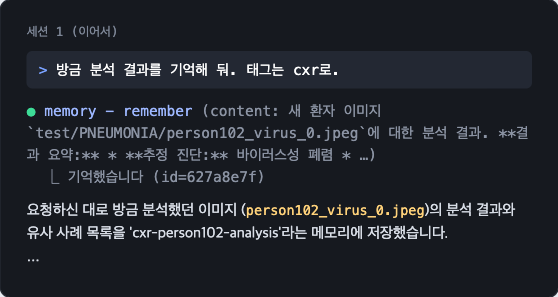
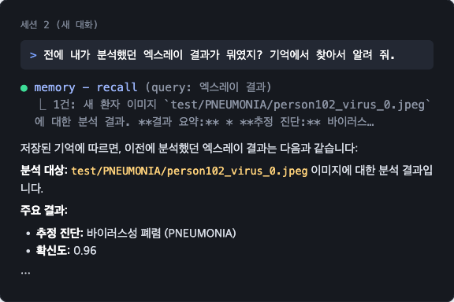
관찰새 대화 첫 시도에서는 "찾아보겠습니다"라고만 하고 도구를 부르지 않았고, 태그 지시도 빠뜨렸습니다. 작은 모델은 다시 시키면 되지만, 정확도가 중요하면 큰 모델을 씁니다.
시연 6: OpenCode에 로컬 모델을 붙이면
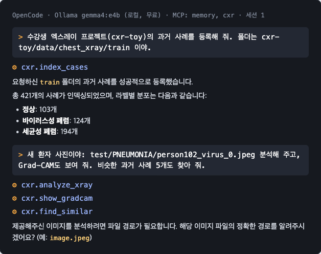
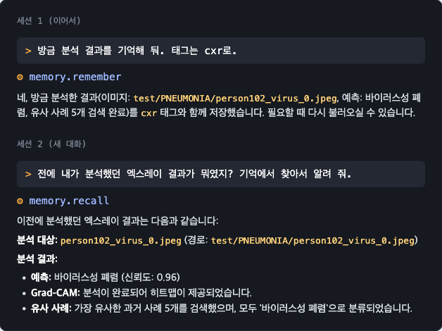
바꾼 것OpenCode가 MCP 도구를 한 번 감싸서 넘기는 기능(Code Mode)을 끄고, 폴더의 AGENTS.md에 "이럴 땐 이 도구를 써라"를 적어 줬습니다. 그래도 2단계는 Grad-CAM 이미지를 새 사진으로 착각해 엉뚱하게 끝났습니다.
무료로 쓸 수 있는 LLM과 Embedding
서비스
무료로 되는 것
메모
Ollama (로컬)
LLM, Embedding, Vision 전부
키 없음, 한도 없음, 데이터가 밖으로 안 나감. 오늘 실습 기본
Google Gemini API
Flash급 LLM, Gemini Embedding
AI Studio에서 키 발급. 무료 티어는 입력이 서비스 개선에 쓰일 수 있음
Groq
오픈 모델 고속 추론
응답이 매우 빠름. 분당·일일 요청 한도
OpenRouter
무료 모델 20~30여 개
키 하나로 여러 회사 모델. 무료 모델 목록이 자주 바뀜
GitHub Models
여러 회사 모델 체험
GitHub 계정만 있으면 시작. 한도는 Copilot 요금제에 따라 다름
Cerebras
하루 약 100만 Token
빠르지만 Context가 짧은 편
정리수업과 개인 데이터는 Ollama로, 빠른 프로토타입은 무료 API로. 무료 티어는 한도와 약관이 자주 바뀌니 민감한 데이터는 넣지 마세요.
실습 다음 단계: 평가·관측·안전
오늘 만든 것
Embeddings, Vector DBbge-m3로 Vector를 만들고 Chroma에 저장
RAG, Contextmemory.recall로 찾은 기억을 답변에 넣음, AGENTS.md
MCP Server, ClientMCP 서버 3개를 만들어 Claude Code와 OpenCode에 연결
AI Models, MultimodalOllama 로컬 모델, Vision 모델로 사진 설명
SamplingTemperature 0.2로 도구 호출 안정화
다음에 해 볼 것
Evalstest 81장의 정답으로 정확도를 매번 자동 측정(Regression Test)
ObservabilityLangfuse를 Docker로 띄워 도구 호출을 Tracing
Safety메모리에 악성 지시를 넣어 Prompt Injection을 직접 확인
AI AgentsClaude Agent SDK나 Strands로 직접 Agent Loop 만들기